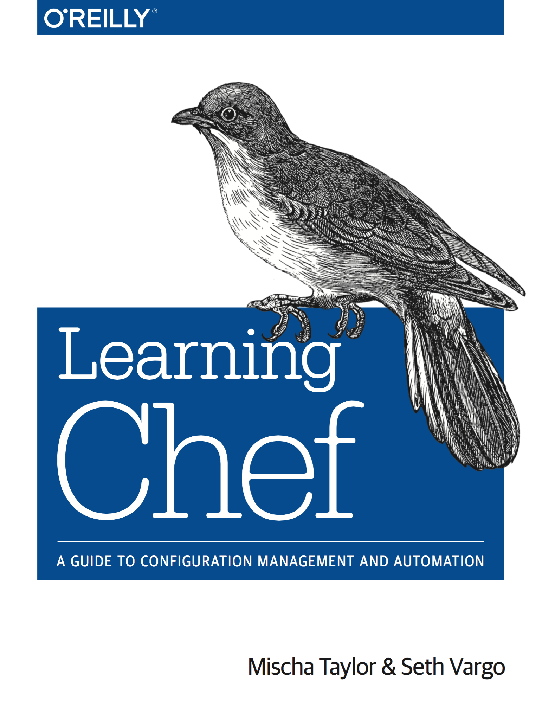

| z, ? | toggle help (this) |
| space, → | next slide |
| shift-space, ← | previous slide |
| b | blank screen |
| d | toggle debug mode |
| ## <ret> | go to slide # |
| c, t | table of contents (vi) |
| f | toggle footer |
| g | toggle follow |
| r | reload slides |
| n | toggle notes |
| p | run preshow |
| P | toggle pause |
| s | choose style |
$ vagrant init box-cutter/centos65
$ vagrant up
$ vagrant ssh
$ vagrant halt
$ vagrant destroy
vagrant
# A most basic Vagrantfile
Vagrant.configure(2) do |config|
config.vm.box = "box-cutter/centos65"
end
Vagrant.configure('2') do |config|
config.vm.define :box_name do |box_name|
# Box setup
...
# VM settings
...
# synced folder(s)
...
# Network settings
...
# SSH settings
...
# Provisioning settings
...
end
endVagrant.configure('2') do |config|
config.vm.define :box_name do |box_name|
box_name.vm.box = 'ubuntu/precise64'
box_name.vm.box_url = \
"http://.../precise64.box"
...
end
endbox_name.vm.provider 'virtualbox' do |v|
v.name = 'NAME_FOR_YOUR_VM'
v.customize [
'modifyvm', :id,
'--memory', 2048,
'--cpus', 1
]
endbox_name.vm.synced_folder \
'.', '/vagrant', \
id: 'vagrant-root', disabled: true
box_name.vm.synced_folder \
'.', '/var/vagrant/, \
:nfs => true, :nfs_version => 3box_name.vm.hostname = 'boxname.vagrant.dev'
box_name.vm.network :private_network, \
ip: '10.20.30.50', netmask: '255.255.255.0'box_name.ssh.forward_agent = truebox_name.vm.provision :shell do |s|
s.inline = 'sudo /usr/bin/chef-client ' \
'-z -o recipe[env_application_dev] ' \
'-c /var/vagrant/solo.rb'
end
.
├── cookbooks
├── Gemfile
├── README.md
├── Rakefile
├── Vagrantfile
└── solo.rbf(f(x)) == f(x)
chef-client for client/server modechef-solo for standalone modecookbooks/cookbook_name
├── attributes
│ └── default.rb
├── recipes
│ └── default.rb
├── README.md
└── metadata.rbname 'cookbook_name'
maintainer 'Great Developer'
maintainer_email 'developer@maii.com'
license 'all_rights'
description 'Does great stuff'
long_description 'Longer description'
version '0.1.1'
supports 'ubuntu'# Install a few packages
package 'vim' do
action :install
end
package 'ntp' do
action :install
end
package 'git' do
action :install
end['vim', 'ntp', 'git'].each do |pkg|
package pkg do
action :install
end
endnode.default['default_packages'] = \
['vim', 'ntp', 'git']node['default_packages'].each do |pkg|
package pkg
enddatabags # data bags dir
└─ users # data bag name
├─ ry21.json # data bag item
├─ ry32.json # data bag item
└─ ry96.json # data bag item{
"id": "ry32",
"name": "Michael Lihs",
"home": "/home/ry32",
"ssh_keys: ["key_1", "key_2"]
}data_bag('users').each do |username|
user_config = \
data_bag_item('users', username)
user_account user_config['id'] do
home '/home/' + user_config['id']
create_group true
ssh_keygen false
action :create
ssh_keys user_config['ssh_keys']
end
endChef Client needs to know, where
Therefore we need a configuration file
current_dir = File.dirname(__FILE__)
file_cache_path "/var/chef-cache"
cookbook_path ["#{current_dir}/cookbooks"]
data_bag_path "#{current_dir}/databags"
ssl_verify_mode :verify_nonesudo /usr/bin/chef-client -z \
-o recipe[cookbook::recipe] \
-c /var/vagrant/solo.rbsudo /usr/bin/chef-client -z \
-o recipe[cookbook::recipe] \
-c /var/vagrant/solo.rb \
-l debug# ... other stuff ...
depends 'cookbook_name'cookbooks/cookbook_name
├── attributes
│ └── default.rb
├── recipes
│ └── default.rb
├── Berksfile
├── README.md
└── metadata.rbsource "https://supermarket.chef.io"
metadataberks vendor \
-b cookbooks/cookbook_name/Berksfile \
berks-cookbooks# ... other stuff ...
cookbook_path ["/var/vagrant/berks-cookbooks"]describe 'app_chef_node::default' do
let(:chef_run) do
ChefSpec::SoloRunner \
.converge(described_recipe)
end
it 'creates directory `/etc/chef`' do
expect(chef_run) \
.to create_directory('/etc/chef')
end
it 'creates file `/etc/chef/client.rb`' do
expect(chef_run) \
.to create_file('/etc/chef/client.rb') \
.with(mode: 0644)
end
enddescribe service('mysql-server') do
it { should be_enabled }
it { should be_running }
end
describe port(3306) do
it { should be_listening }
end
jenkins cookbookknife plugin cookbook doc
$ rake -T
rake cookbook:chefspec[name]
# Runs ChefSpec tests
rake cookbook:foodcritic[name]
# Runs Foodcritic linting
rake cookbook:readme[name]
# Generate README.md files
rake cookbook:test[name]
# Runs knife cookbook test
rake cookbook:upload[name]
# Upload cookbook(s)
